1.由于每个同事的电脑环境都不同，如果您在使用管理系统点击打印的时候不能弹出打印窗口，说明您的电脑可能需要安装运行环境
2.请点击下载安装java运行环境jre，安装界面如下图所示
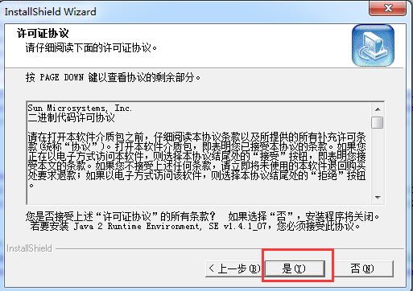
3.点击上图中的是按钮进入下图界面，选典型安装然后点下一步，等待安装完成即可
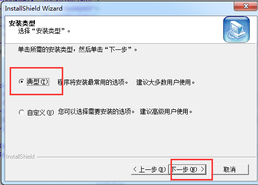
4.如果需要下载打印pdf格式文档，需要下载PDF打印机软件，第一种方法是下载安装PDFCreator，请点击下载PDFCreator进行安装，点击安装程序后如下图
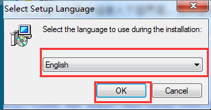
5.语言选择English点击OK，依次选择默认即可完成安装。
6.打印pdf格式文档的第二种方法是下载安装FoxitReader，请点击下载FoxitReader进行安装，点击安装程序后如下图
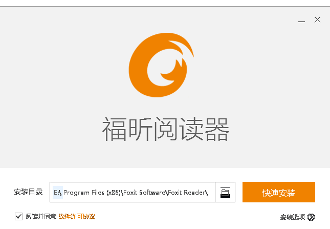
7.选择安装路径后点击快速安装即可完成安装
8.下面以提单中的打印为例陈述具体操作流程，点击下面1图中的打印按钮即生成2图的报表
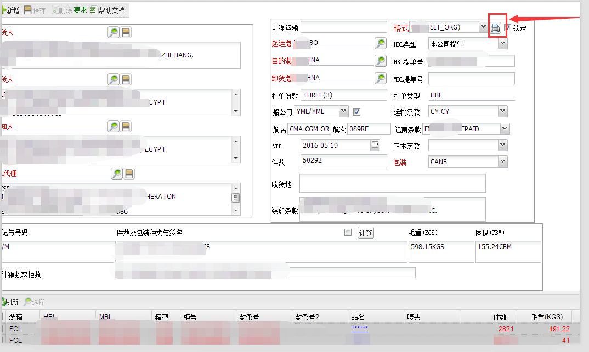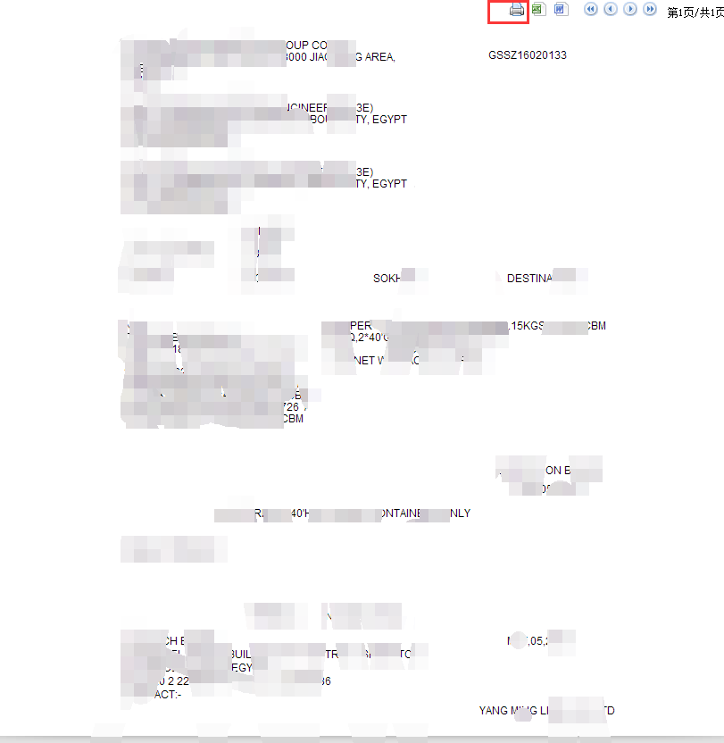
9.点击上图中的打印机按钮弹出下图所示打印窗口
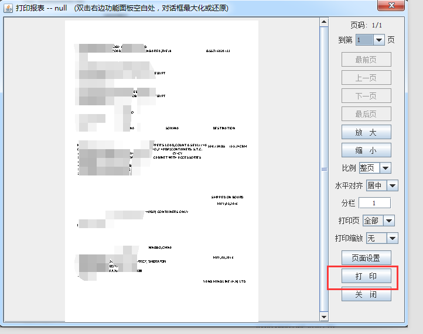
10.点击上图中的打印弹出下图窗口，如果需要pdf格式文档，在名称下拉框中选择PDFCreator后点击确定，如果使用FoxitReader就选择Foxit Reader PDF Printer
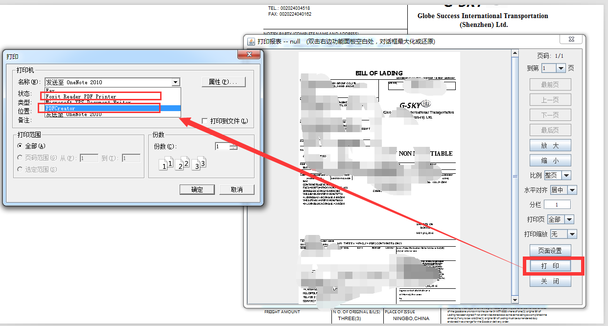
11.点击确定后安装过PDFCreator会弹出下图窗口点击save保存即可
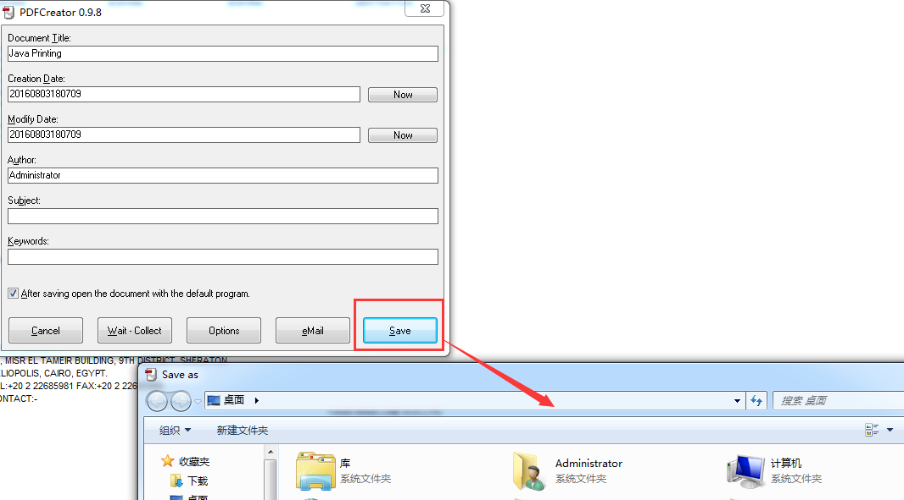
12.由于浏览器众多，很难做到全部兼容，打印的时候我们建议使用360、IE、QQ浏览器、猎豹这几类浏览器，不建议使用谷歌，除IE浏览器外其他必须设置为非极速模式
13.下面对几类浏览器的非极速模式设置进行讲述，下图为360浏览器设置方法，点击图中按钮设置为兼容模式即可
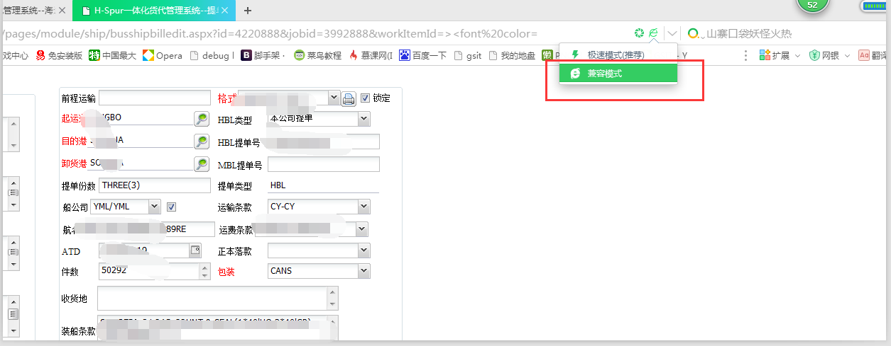
14.下面是猎豹浏览器的非极速模式设置方法，点击连蓝旗左上角的豹子图像在点击选项/设置进入设置界面
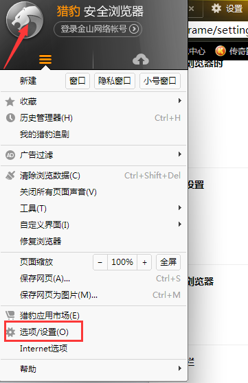
下图是设置界面，把基本设置的浏览模式设置为优先使用兼容模式即可
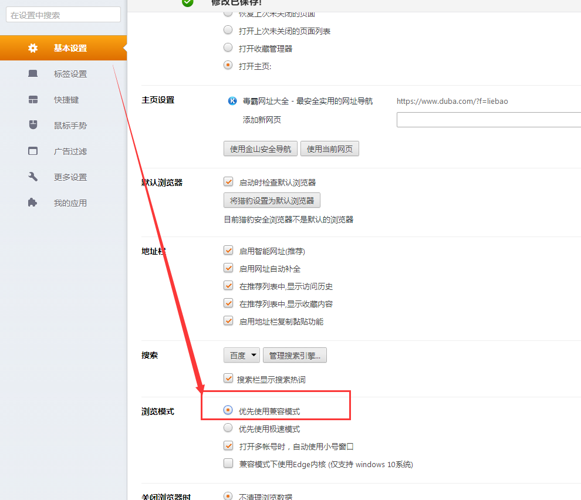
14.下图是qq浏览器的设置界面，直接点击设置为兼容模式即可
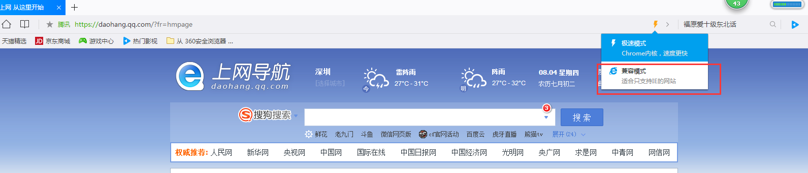